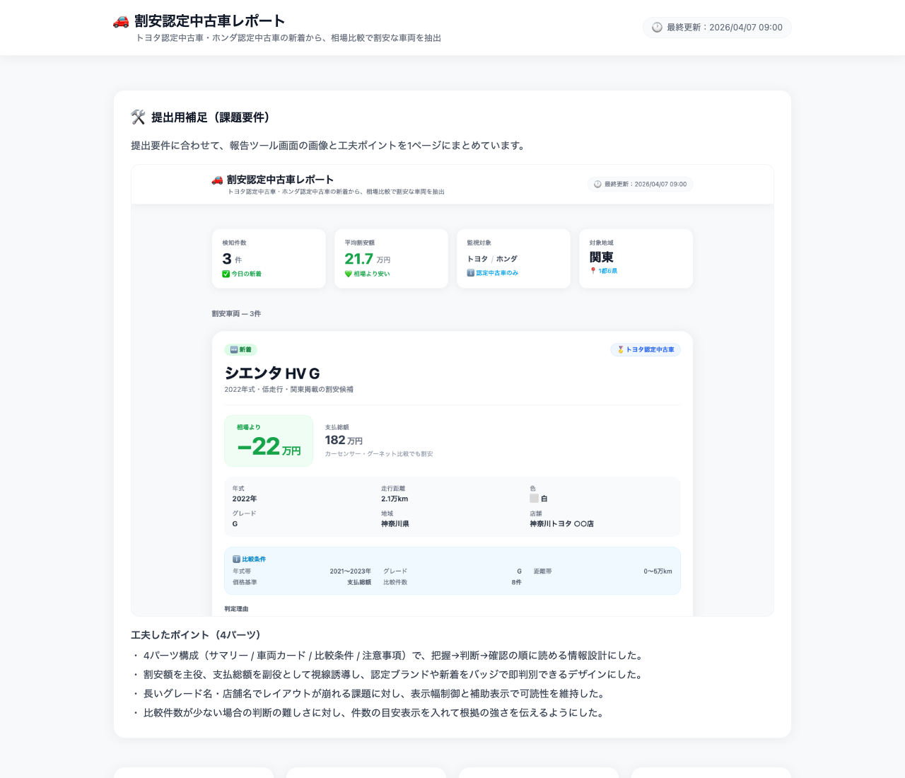

提出用補足（課題要件）
提出要件に合わせて、報告ツール画面の画像と工夫ポイントを1ページにまとめています。

工夫したポイント（4パーツ）
- ・ 4パーツ構成（サマリー / 車両カード / 比較条件 / 注意事項）で、把握→判断→確認の順に読める情報設計にした。
- ・ 割安額を主役、支払総額を副役として視線誘導し、認定ブランドや新着をバッジで即判別できるデザインにした。
- ・ 長いグレード名・店舗名でレイアウトが崩れる課題に対し、表示幅制御と補助表示で可読性を維持した。
- ・ 比較件数が少ない場合の判断の難しさに対し、件数の目安表示を入れて根拠の強さを伝えるようにした。
検知件数
0
件
今日の新着
平均割安額
0.0
万円
相場より安い
監視対象
認定中古車のみ
対象地域
関東
1都6県
割安車両 — 0件
本日の割安車両は見つかりませんでした
明日の更新をお待ちください
注意事項
ご確認ください
- ・ 相場は取得時点の情報です。リアルタイムの市場価格とは異なる場合があります。
- ・ グレード表記のゆれや掲載条件の違いにより、比較に誤差が出る場合があります。
- ・ 最終的な判断は掲載ページの詳細情報をご確認のうえ、担当者にお問い合わせください。